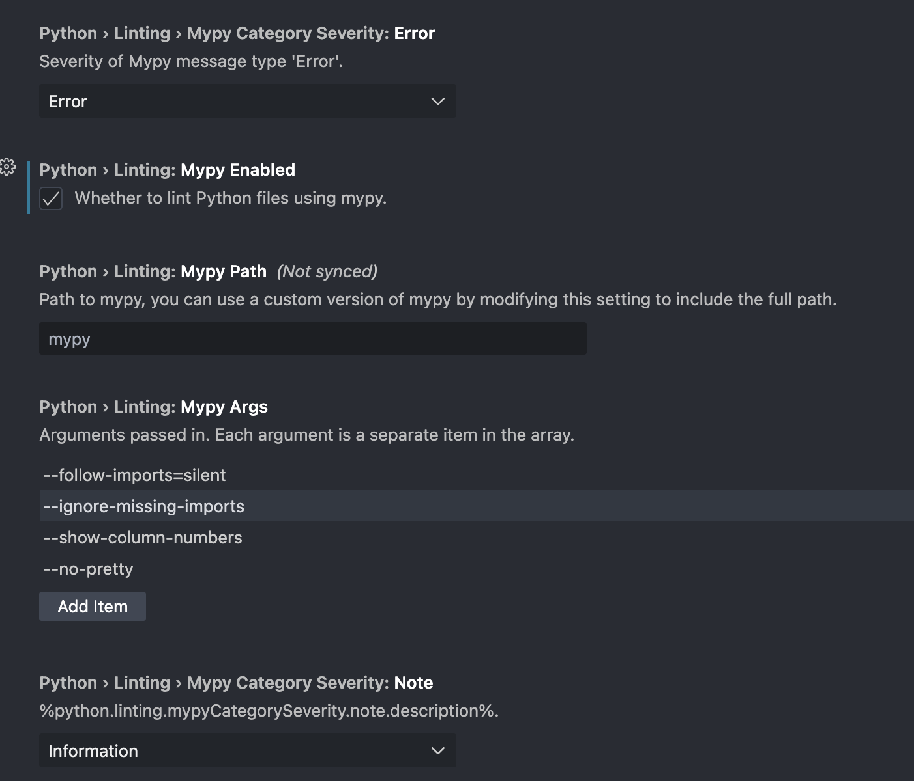
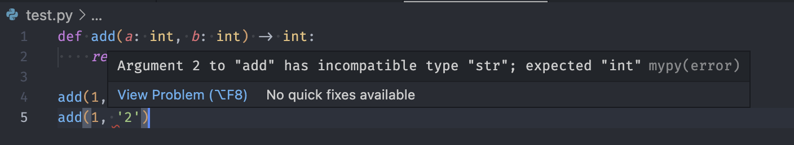

Type Hints
Contents
Type Hints#
Динамично vs. статично типизиране. Round 2#
Динамичното типизиране позволява гъвкавост, но това идва и със своите недостатъци от гледна точка на поддръжката и четимостта на кода.
Например, ако имаме следната функция:
def validate_serial_number(serial_number):
pass # definition is irrelevant for this example
Ако нямаме поглед над имплементацията на функцията (или пък имаме, но не е тривиално да се прецени точно имплементацията с какви типове борави), то тогава как да разберем serial_number дали да ѝ го подадем като int или str? Или пък може да е list от int-ове дори?
Също така, от името на функцията не става много ясно тя какво връща - дали не връща нищо, а само изпълнява проверки и странични ефекти, или пък проверява валидността на номера и връща bool, или пък връща някакъв тип за грешка при неуспех, а None при успех?
Type Hints and mypy#
От Python 3.5 насам можем да пишем “подсказки” за очаквания тип (или очакваните типове, в случай че са повече от един).
В случая функцията можем да я анотираме по следния начин:
def validate_serial_number(serial_number: str) -> bool:
pass # ...
Трябва да се отбележи, че тези анотации са само hints (“подсказки” за програмиста), т.е. не получаваме поведението на статично типизираните езици, тъй като интерпретатора не следи за спазването на анотациите:
def add(a: int, b: int) -> int:
return a + b
print("Passing `int`: ", add(1, 2))
print("Passing `str`: ", add("1", "2"))
Passing `int`: 3
Passing `str`: 12
Това въпросно следене може да стане чрез т.нар. “type checkers”. Най-използваният е mypy.
В PyCharm би трябвало по подразбиране да е включено, докато във VS Code може да се включи от настройките на Python extension-a:

При включването на настройката за пръв път би трябвало да се покаже долу вдясно диалогов попъп, от който да може да се инсталира mypy автоматично.
След включването, всяка некоректност ще се показва като грешка във VSCode по подобен начин:

Синтаксис и особености на анотациите#
Анотациите са добавени в Python 3.0 и оригинално са нямали конкретна семантика или общоприета употреба. Понеже са интуитивно удобни за указване на типове, PEP484 и PEP526 предлагат и стандартизират точно тази им употреба.
Анотации могат да се добавят към променливи и функции. Те отиват в __annotations__ списъка на модула или на функцията, респективно. Това означава, че могат и runtime да бъдат достъпни:
variable: int = 42
print(f"{__annotations__ = }") # module.__annotations__ keeps the annotations of all variables in the module
def function(f: float, b: bool = True) -> int:
return int(f) if b else 0 # this is the most meaningless function ever
print(f"{function.__annotations__ = }") # functions have that dunder as well
__annotations__ = {'variable': <class 'int'>}
function.__annotations__ = {'f': <class 'float'>, 'b': <class 'bool'>, 'return': <class 'int'>}
Забележка: По общоприета питонска конвенция за стил, интервали около = на именованите аргументи се слагат ако има анотация, но се пропускат ако няма:
ОК:
def foo(a: int, b: int = 0) -> int:
return a + b
def foo(a, b=0):
return a + b
Not quite OK:
def foo(a: int, b: int=0) -> int:
return a + b
def foo(a, b = 0):
return a + b
Забележка 2: Възможна е анотация на имe без да му бъде присвоявана стойност. Опитът за достъп обаче преди да му бъде присвоена такава впоследствие ще доведе до грешка, понеже още не е дефинирана:
name: str
print(name)
---------------------------------------------------------------------------
NameError Traceback (most recent call last)
Cell In [5], line 3
1 name: str
----> 3 print(name)
NameError: name 'name' is not defined
Анотиране на различните вградени типове#
Както видяхме, използваме самият тип за да го анотираме, т.е. bool, int, float, complex, str, bytes, None и т.н. са валидни в анотации. (да, None освен стойност, е и тип сам по себе си)
def i_wanna_print(something: str, terminator: str = "\n") -> None:
print(something, terminator=terminator)
def extract_nums_from_input_row(row: str) -> list:
return list(map(int, row.split()))
Във функцията extract_nums_from_input_row в горният пример обаче не знаем всичко за return типа. Знаем, че е list, но лист от какво?
Проблемът с такива generic типове като list, tuple, dict, set и т.н. решаваме като укажем типа на елементите в тях в квадратни скоби. От Python 3.9 насам можем директно да ползваме builtin типовете, но за версии 3.5 до 3.8 вкл. трябва да импортнем подходящите класове от typing модула:
# Python 3.5 to 3.8
from typing import List, Tuple, Dict
def extract_nums_from_input_row(row: str) -> List[int]:
return list(map(int, row.split()))
def multiply(a: Tuple[int, int, int], b: Tuple[int, int, int]) -> Tuple[int, int, int]:
return sum(x * y for x, y in zip(a, b))
def bind_names_to_ages(names: List[str], ages: List[int]) -> Dict[str, int]:
return dict(zip(names, ages))
# Python 3.9+
def extract_nums_from_input_row(row: str) -> list[int]:
return list(map(int, row.split()))
def multiply(a: tuple[int, int, int], b: tuple[int, int, int]) -> tuple[int, int, int]:
return sum(x * y for x, y in zip(a, b))
def bind_names_to_ages(names: list[str], ages: list[int]) -> dict[str, int]:
return dict(zip(names, ages))
Ако искаме tuple да има точно 2 елемента от тип int например, можем да го анотираме като Tuple[int, int]. Ако искаме да има произволен брой елементи от тип int, можем да го анотираме като Tuple[int, ...].
def calculate_polynomial(coefficients: tuple[float, ...], x: float) -> float:
return sum(k * (x ** n) for n, k in enumerate(reversed(coefficients)))
При указване на *args и/или **kwargs е нужно да укажем само типа на съответните елементи, без tuple или dict:
def calculate_polynomial(*coefficients: float, x: float) -> float:
return sum(k * (x ** n) for n, k in enumerate(reversed(coefficients)))
За удобство можем да си създваме alias-и за различни типове, които да ги използваме по-късно:
Vector3D = tuple[float, float, float]
def multiply(a: Vector3D, b: Vector3D) -> Vector3D:
return sum(x * y for x, y in zip(a, b))
В случай, че искаме да анотираме функция, която например подаваме като параметър, ползвамe Callable:
from typing import Callable
def bubble_sort(arr: list[int], comparator: Callable[[int, int], bool]) -> list[int]:
arr = arr.copy()
for _ in range(len(arr)):
for j in range(len(arr) - 1):
if not comparator(arr[j], arr[j + 1]):
arr[j], arr[j + 1] = arr[j + 1], arr[j]
return arr
bubble_sort([1, 2, 3], lambda x, y: x > y)
[3, 2, 1]
Union и Optional#
Понякога можем да поддържаме по няколко възможни типа. Целта на Union е да “обедини” тези типове в един. Например, ако искаме да можем да подаваме и int и str като аргументи на функция, можем да го анотираме като Union[int, str] или Union[str, int]:
from typing import Union
def is_serial_number_valid(serial_number: Union[str, int]) -> bool:
serial = str(serial_number)
return (
len(serial) == 10
and serial.isdigit()
and serial[-1] == sum(map(int, serial[:-1])) % 10
)
От Python 3.10 насам можем да използваме оператора | вместо Union:
def is_serial_number_valid(serial_number: str | int) -> bool:
serial = str(serial_number)
return (
len(serial) == 10
and serial.isdigit()
and serial[-1] == sum(map(int, serial[:-1])) % 10
)
def calculate_polynomial(*coefficients: int | float | complex, x: int | float | complex) -> complex:
return complex(sum(k * (x ** n) for n, k in enumerate(reversed(coefficients))))
calculate_polynomial(-1, 5j, 6.9, 0, 94, x=42)
(-3099430.4+370440j)
Много често се налага да имаме стойност по подразбиране None вместо такава на даден тип или пък да връщаме None вместо стойност от даден тип. Това е и идеята на Optional, който е тип на практика еквивалентен на Union с None:
import hashlib
from typing import Optional
def hash_password(password: str, salt: Optional[str] = None) -> bytes:
hash = hashlib.sha256(password.encode())
if salt is not None:
hash.update(salt.encode())
return hash.digest()
# Equivalent:
import hashlib
def hash_password(password: str, salt: str | None = None) -> bytes:
hash = hashlib.sha256(password.encode())
if salt is not None:
hash.update(salt.encode())
return hash.digest()
Any#
Ако искаме даден тип да е произволен, можем да го анотираме с Any. Type-checker-ите няма да хвърлят грешка, който и тип да подаваме като стойност на нещо, което се очаква да е от тип Any.
from typing import Any
def i_wanna_print(something: Any, terminator: str = "\n") -> None:
print(something, terminator=terminator)
def play_audio(filename: str, options: dict[str, Any]) -> None:
if options["BITRATE"] == 320:
print("Playing in high quality")
if options["LOOP"]:
print("Playing in loop")
#...
Generics#
В някои случаи обаче ако използваме Any директно всъщност заличаваме информация, която ни е нужна после.
Например нека разгледаме следната функция:
import random
from typing import Any
def shuffled(l: list[Any]) -> list[Any]:
return random.sample(l, len(l))
Ако я използваме обаче в следния контекст:
suits = "♠♥♦♣"
ranks = "AKQJT98765432"
brand_new_deck = [f"{rank}{suit}" for suit in suits for rank in ranks] # -> list[str]
shuffled_deck = shuffled(brand_new_deck) # -> list[Any] !!!
# Сега `shuffled_deck` за type-checker-ите е list[Any] вместо list[str]
# т.е. изгубихме типовата информация, която би трябвало да имаме.
# Когато се опитаме да направим нещо специфично за `str`
# ще ни го подчертаят като невъзможно или неопределено.
from collections import Counter
suits_dealt = Counter(card[1] for card in shuffled_deck[::4]) # ⚠️ card[1] ще ни го дава като опит за индексиране на `Any`, а не `str`
print(suits_dealt)
Counter({'♥': 5, '♦': 4, '♠': 2, '♣': 2})
За да се справим с този проблем трябва да обявим такива типови параметри като generics чрез TypeVar:
from typing import TypeVar
T = TypeVar("T")
def shuffled(l: list[T]) -> list[T]:
return random.sample(l, len(l))
С примерът горе статичния type-checker ще знае, че каквито елементи има листът, който е подаден като аргумент на shuffled, такива и ще бъдат елементите на върнатия лист.
Можем и да дадем ограничения за TypeVar-овете. Ако искаме в горния пример T да ни бъде int или str, можем да напишем:
from typing import TypeVar
T = TypeVar("T", int, str)
def shuffled(l: list[T]) -> list[T]:
return random.sample(l, len(l))
Собствени типове#
Нашите собствени класове също могат да се използват като типове:
class Person:
def __init__(self, name: str, age: int) -> None:
self.name = name
self.age = age
def __repr__(self) -> str:
return f"Person(name={self.name}, age={self.age})"
def to_dict(self) -> dict[str, Any]:
return {"name": self.name, "age": self.age}
def get_people() -> list[Person]:
return [Person("John", 42), Person("Jane", 37)]
Тук особеното е, че в дефиницията на методи няма нужда да анотираме self - той винаги ще е от типа на класа.
Когато обаче имаме метод, който приема или връща обект от типа на класа, към който е, съществуват особености за различните версии на езика. В Python 3.10 не е грешка да се използва името на класа още в дефиницията му, докато в по-старите версии - е. От Python 3.7+ може да се импортне from __future__ import annotations, за да работи това, докато за по-стари версии решението е просто да се напише името на класа като стринг в анотацията.
class Person:
def __init__(self, name: str, age: int) -> None:
self.name = name
self.age = age
def __repr__(self) -> str:
return f"Person(name={self.name}, age={self.age})"
def to_dict(self) -> dict[str, Any]:
return {"name": self.name, "age": self.age}
# Python 3.10+ way
# or for Python 3.7-3.9 you also have to add `from __future__ import annotations`
@classmethod
def from_dict(cls, data: dict[str, Any]) -> Person:
return cls(**data)
# Python <3.7 way
@classmethod
def from_dict(cls, data: dict[str, Any]) -> "Person":
return cls(**data)
Можем да си декларираме собствени типове, които да са съставени от други типове. Това се прави с NewType:
from typing import NewType, Optional
PersonId = NewType("PersonId", int)
class Person:
def __init__(self, id: PersonId, name: str, age: int) -> None:
self.id = id
self.name = name
self.age = age
def __repr__(self) -> str:
return f"Person(id={self.id}, name={self.name}, age={self.age})"
def to_dict(self) -> dict[str, Any]:
return vars(self)
@classmethod
def from_dict(cls, data: dict[str, Any]) -> Person:
return cls(**data)
def get_person_by_id(id: PersonId, database: list[Person]) -> Optional[Person]:
return next((person for person in database if person.id == id), None) # `next` has an optional second parameter - default value
database = [
Person(PersonId(37), "Lana Xes", 18),
Person(PersonId(69), "Axl Rose", 60),
]
print(get_person_by_id(PersonId(37), database))
print(get_person_by_id(PersonId(666), database))
Person(id=37, name=Lana Xes, age=18)
None
Тук обаче бихме имали проблем в случай, че имаме наследник на този клас. Например:
class Admin(Person):
def __init__(self, id: PersonId, name: str, age: int, can_ban: bool) -> None:
super().__init__(id, name, age)
self.can_ban = can_ban
def __repr__(self) -> str:
return f"Admin(id={self.id}, name={self.name}, age={self.age}, can_ban={self.can_ban})"
def ban(self, person: Person) -> None:
if self.can_ban:
print(f"{self.name} is banning {person.name}.")
else:
print(f"{self.name} is not allowed to ban anyone.")
pesho = Person(PersonId(42), "Pesho", 42)
peshos_dict = pesho.to_dict()
pesho_evolved = Admin.from_dict({**peshos_dict, "can_ban": True}) # -> Person, at least for the static type checker
pesho_evolved.ban(pesho) # ⚠️ type checker will complain that type `Person` has no method `ban`
Pesho is banning Pesho.
Това поправяме отново с TypeVar, този път използвайки именования параметър bound:
from typing import Type
PersonId = NewType("PersonId", int)
TPerson = TypeVar("TPerson", bound="Person") # в кавички, защото `Person` още не съществува
class Person:
def __init__(self, id: PersonId, name: str, age: int) -> None:
self.id = id
self.name = name
self.age = age
def __repr__(self) -> str:
return f"Person(id={self.id}, name={self.name}, age={self.age})"
def to_dict(self) -> dict[str, Any]:
return vars(self)
@classmethod
def from_dict(cls: Type[TPerson], data: dict[str, Any]) -> TPerson: # <- тук са промените
return cls(**data)
def some_other_common_method(self: TPerson) -> Any: # <- тук е важно да укажем какъв тип е `self`, ако ще се наследява
pass
class Admin(Person):
def __init__(self, id: PersonId, name: str, age: int, can_ban: bool) -> None:
super().__init__(id, name, age)
self.can_ban = can_ban
def __repr__(self) -> str:
return f"Admin(id={self.id}, name={self.name}, age={self.age}, can_ban={self.can_ban})"
def ban(self, person: Person) -> None:
if self.can_ban:
print(f"{self.name} is banning {person.name}.")
else:
print(f"{self.name} is not allowed to ban anyone.")
Консистентни типове#
Type checker-ите се оплакват само когато видят неконсистенти типове.
Казваме, че типът T е консистентен с типа U, тогава и само тогава когато поне едно от следните условия е изпълнено:
Tе подтип наU(\( T \subset U \))TеAnyUеAny
Тук е хубаво да отбележим, без да навлизаме в много подробности, че това дали T е подтип на U в случаите на generic типове зависи от тяхната вариантност. Например, като отчетем факта, че bool е подтип на int, получаваме следното поведение:
Ковариантност:
tuple[bool]е подтип наtuple[int]( \( T \subset U \Rightarrow C[T] \subset C[U] \))Инвариантност:
list[bool]не е нито подтип, нито надтип наlist[int]Контравариантност:
Callable[[int], ...]е подтип наCallable[[bool], ...]( \( T \subset U \Rightarrow C[U] \subset C[T] \))
Duck typing#
Ако изглежда като патка, плува като патка и квака като патка, то е патка.
В програмирането съществуват два варианта за типизация: номинална и структурна.
При номиналната типизация типовете са именувани и се сравняват по име и декларация, например
boolнаследяваint, защото така е деклариран. В Python се ползва предимно номинално типизиране.При структурната типизация типовете се сравняват по-скоро по тяхната структура, т.е. какви методи притежават и т.н. Като пример можем да дадем
__len__- можем на теория да декларираме структураSized, към която би принадлежало всичко, което има метод__len__, независимо от името и декларацията му.
В динамичната типизация често са по-важни наборът от методи, които един обект притежава, а не конретния му тип и декларация на базови класове. Именно това стои зад термина duck typing.
В typing модулът ни предоставя готови такива структури (или протоколи), които са често използвани. Например точно такъв Sized какъвто описахме по-горе има там:
from typing import Sized
def get_length_squared(obj: Sized) -> int:
return len(obj) ** 2
В горният метод е най-удачно да се анотира аргумента със Sized, понеже Any би подвел програмиста, че абсолютно всичко е окей, но на практика не е съвсем така - абсолютно всичко, което дефинира __len__ е окей. Точно това ни казва протоколът Sized.
Други полезни и често-използвано протоколи са например Sequence, Iterable, Iterator и Container:
Iterable[]- итеруеми, т.е. всичко, което дефинира__iter__или__getitem__Sequence[]- редици, т.е. всичко, което дефинира__getitem__и__len__Container[]- всичко, което дефинира__contains__Iterator[]- всичко, което дефинира__next__и__iter__
Конкретно тези 4 протокoла са и абстрактни базови класове. От Python 3.9 насам е deprecate-нато те да се импортват от typing модула - вместо това може да си се използва директно collections.abc.
Sequence дефинира още и __contains__ и __reversed__, които използват имплементацията на другите два метода. Също така по дефиниця може да забележим, че всички редици са и итеруеми, и контейнери.
from collections.abc import Iterable
Number = int | float | complex
def multiply(a: Iterable[Number], b: Iterable[Number]) -> Number:
return sum(a * b for a, b in zip(a, b))
Protocol#
Можем естествено и сами да си дефинираме протокол, с typing.Protocol.
Да предположим, че имаме подобни класове (примерно предоставени от някои библиотеки):
class Child:
def quack(self) -> None:
print("Quack!")
class Physicist:
def quack(self) -> None:
print("Quark.")
Номинално те нямат нищо общо (нямат общ базов клас), но структурно имат общ метод. Да предположим и че точно този метод ни трябва за някаква функция, като тази:
def make_quack(duck):
duck.quack()
Как ще анотираме аргумента duck на функцията?
Any не ни върши достатъчна работа, понеже не всичко може да quack()-а. На практика искаме да си дефинираме наш си протокол, който да съдържа само този метод:
from typing import Protocol
class Duck(Protocol):
def quack(self) -> None:
... # yes, this is valid Python syntax apparently
def make_quack(duck: Duck) -> None:
duck.quack()
peshi = Child()
feynman = Physicist()
make_quack(peshi)
make_quack(feynman)
# static type-checkers will not complain about above 2 invocations.
Quack!
Quark.
Ако искаме isinstance и issubclass да работят с протоколите ни, трябва да ги декорираме с typing.runtime_checkable:
from typing import Protocol, runtime_checkable
@runtime_checkable
class Duck(Protocol):
def quack(self) -> None:
...
print(f"{isinstance(peshi, Duck) = }")
print(f"{issubclass(Physicist, Duck) = }")
isinstance(peshi, Duck) = True
issubclass(Physicist, Duck) = True
Note: преди Python 3.8 Protocol се намира в typing_extensions модула.
@dataclass#
Говорейки за typing няма как вече да не намесим и един полезен декоратор - dataclasses.dataclass, вмъкнал се в езика с Python 3.7.
Както подсказва донякъде името му, той има за цел да помогне с дефинирането на прости класове, които имат за цел предимно да съхраняват някакви атрибути с някакви данни (подобно на типовете, за които бихме използвали struct вместо class в С++ / С# например).
Предоставя ни изключително голямо синтактично удобство, понеже следния клас:
from dataclasses import dataclass
@dataclass
class User:
id: int
username: str
email: str
is_admin: bool = False
е абсолютно еквивалентен на:
class User:
def __init__(self, id: int, username: str, email: str, is_admin: bool = False) -> None:
self.id = id
self.username = username
self.email = email
self.is_admin = is_admin
def __repr__(self) -> str:
return f"User(id={self.id}, username={self.username}, email={self.email}, is_admin={self.is_admin})"
def __eq__(self, other: object) -> bool:
if not isinstance(other, User):
return False
return vars(self) == vars(other)
# Python 3.10+ only, used for the `match` statement
def __match_args__(self) -> tuple[int, str, str, bool]:
return self.id, self.username, self.email, self.is_admin
И това са само част от способностите на @dataclass. Той приема различни параметри, с които още можем да укажем дали класът да е immutable (frozen=True), да има __hash__, дефиниции на операторите за сравнение, и др.
@dataclasses.dataclass(*,
init=True,
repr=True,
eq=True,
order=False,
unsafe_hash=False,
frozen=False,
match_args=True,
kw_only=False,
slots=False,
weakref_slot=False
)
from dataclasses import dataclass
@dataclass(frozen=True)
class Point:
x: int | float = 0
y: int | float = 0
s = {Point(1, 2), Point(), Point(1, 2)}
print(s)
{Point(x=1, y=2), Point(x=0, y=0)}
Повече информация в документацията.